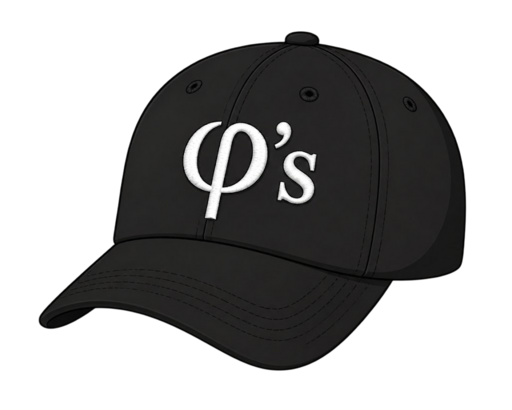
PhysCaPGrounding Code-as-Policy Agent with Physics-Informed Exploration
1National Taiwan University 2NVIDIA Research 3National Yang Ming Chiao Tung University
*Equal contribution
Accepted at the 8th Robot Learning Workshop @ NeurIPS 2026We present PhysCaP, a Physics-Informed Code-as-Policy agent system for active perception in robotic manipulation. While vision-language-action policies excel at imitating demonstrations, they rely on passive observation and fail to infer latent physical properties critical for manipulation. PhysCaP augments code-as-policy frameworks with a physics-informed exploration layer that enables explicit information-seeking through interaction. Our method introduces training-free physical property extraction modules that estimate object mass and stiffness from robot proprioception without additional sensors. To balance exploration costs and the efficiency of information obtained, PhysCaP employs a multi-agent design: a Planner that decides when to explore and when to stop, and a Prioritizer that filters implausible interactions and ranks the remainder using a heuristic priority score, enabling efficient, targeted exploration. We evaluate PhysCaP on three real-world tabletop manipulation tasks and a simulated task in LIBERO. The results show that existing passive and naive interactive baselines either fail when physical properties are hidden or over-explore, whereas PhysCaP achieves comparable performance with fewer interactions and reduced execution time. Ablation studies further validate the effectiveness of the proposed physical property extraction modules.
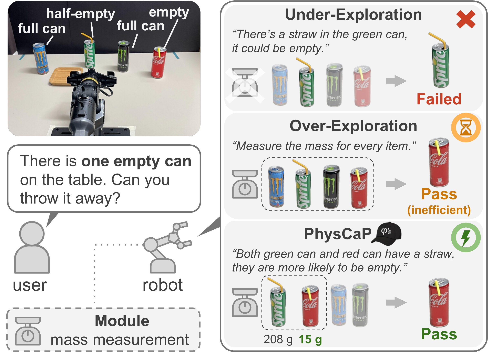
PhysCaP augments Code-as-Policy (CaP) agents with physics-informed exploration, enabling inference of latent object properties (e.g., mass) via physical property extraction modules to solve manipulation tasks requiring hidden-state estimation, e.g., removing an empty can.
PhysCaP targets manipulation tasks where success depends on latent physical properties that cannot be seen and no dedicated sensing hardware is available. It actively interacts with objects to acquire the missing information, and once sufficient evidence is collected, it uses the measured properties to synthesize a more informed plan.
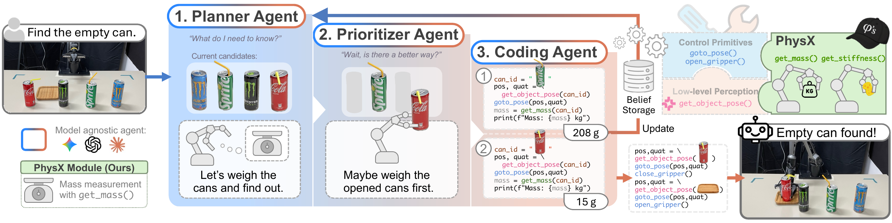
Overview of PhysCaP. Given a task requiring latent physical information, the Planner identifies what information is missing from the visual scene and proposes an initial exploration plan. The Prioritizer then refines this plan by filtering implausible actions and reducing redundant exploration. Finally, a code-generation agent produces executable programs that invoke the PhysX modules (get_mass, get_stiffness) to actively measure the properties. The measurements update the system belief, which the Planner consults to decide whether to explore further or execute the task.
The agent receives a task in natural language, such as “Find the empty can.”, together with an image of the scene from a ZED 2i depth camera.
Success depends on latent physical properties, such as mass or stiffness, that cannot be seen in the image.
Given the task and the visual scene, the Planner assesses whether the current observations suffice for reliable task execution. If not, it identifies the missing physical information and triggers targeted exploration, proposing candidate interactions.
After each measurement it consults the system belief. It stops exploration once sufficient evidence has been gathered and invokes the code-generation agent, so the agent avoids over-exploration.
The Prioritizer refines the Planner’s candidate list. Using visual heuristics, it filters out implausible or redundant interactions and ranks the rest by a priority score, with a brief reason for each score.
For example, an opened can (with a straw) is more likely to be empty than a sealed one, and a dark avocado is more likely to be ripe than a green one, so these are measured first.
The code-generation agent writes executable Python programs that call the physical property extraction (PhysX) modules, get_mass and get_stiffness, together with the low-level control APIs.
Each program measures the next prioritized candidate and returns the measurement, for example 208 g for a full can and 15 g for the empty one.
The measurements update the system belief, which keeps the information gathered so far.
The Planner consults it to decide whether to explore further or to execute the task. Keeping earlier measurements matters most in the longer-horizon Pack Grocery Bag task.
Built on CaP-Agent0, the system provides modular control APIs, including get_object_pose, goto_pose, open_gripper, and close_gripper.
Object poses come from Molmo2 object localization and ZED 2i depth estimation. Because these APIs separate high-level reasoning from low-level control, they can be mapped to other robot platforms.
get_mass lifts the object 15 cm and compares joint torques with and without the object. The torque difference gives the object’s mass.
get_stiffness closes the gripper in small steps, records gripper jaw displacement and force, and fits a stiffness value that is mapped to five levels, from Ultra-Soft (1) to Rigid (5).
Both are training-free and use only robot proprioception and a standard gripper, with no tactile sensors.
Once the Planner decides the evidence is sufficient, the coding agent synthesizes a more informed code policy, here picking up the empty can and placing it on the wooden tray.
The robot completes the task, grounded by the physical measurements: “Empty can found!”
All agents use Gemini 3.1 Pro by default, but the framework does not depend on one model. We also ran Identify Empty Can with Claude Fable 5 and GPT-6 Astra as the backbone (see Results).
PhysCaP addresses two complementary problems: how to obtain physical information, and how to acquire only what is useful.
VLMs cannot reliably infer hidden physical properties from visual observations alone, and incorrect estimates propagate to later reasoning and planning. PhysCaP therefore lets the robot interact with objects to measure them. The two PhysX modules are training-free and use only robot proprioception and a standard gripper, with no tactile sensors or other added hardware.
get_massThe robot executes a fixed lift trajectory, raising the end-effector 15 cm. It records joint torques first with an empty grasp and then while holding the object. The torque difference \(\Delta\tau = \tau_{\mathrm{loaded}} - \tau_{\mathrm{empty}}\) isolates the object's gravitational contribution:
\(J_z\): end-effector Jacobian projected onto the vertical direction. The estimate does not depend on where the object was placed. Returns the mass in kilograms (about ±30 g noise); a large negative value means the grasp failed, and NaN means no reading was taken.
get_stiffnessThe gripper closes in fine increments until contact, confirmed by a brief backoff test. It then keeps closing while recording jaw displacement \(d\) and gripper force \(F\) up to a target force, and fits a stiffness coefficient by least squares:
Mapped to five levels, from Ultra-Soft (1) to Rigid (5). Each object is measured five times and the final level is a majority vote.
Measuring takes time, so the agent must balance acting with insufficient information against the cost of unnecessary interactions. PhysCaP splits this decision across separate agents: the Planner decides when to explore and when to stop, the Prioritizer decides what to interact with next, and the Coding Agent turns each decision into executable code.
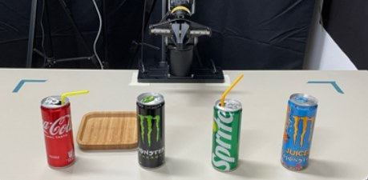
“What do I need to know?”
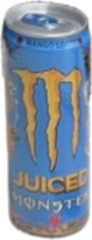
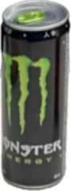
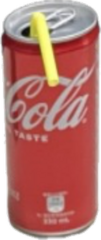
“Wait, is there a better way?”
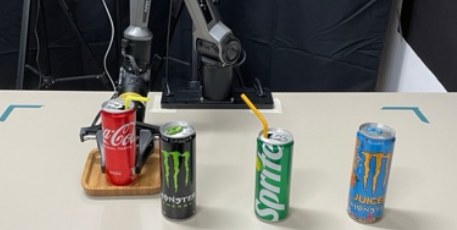
“What do I need to know?”
Given the task and the visual scene, the Planner assesses whether the current observations suffice. If not, it identifies the missing physical information and triggers targeted exploration, proposing candidate interactions.
After each measurement it checks the system belief. It stops exploration once there is sufficient evidence and invokes the Coding Agent, avoiding over-exploration.
“Wait, is there a better way?”
The Prioritizer refines the Planner's candidates. Using visual heuristics, it filters out implausible or redundant interactions and ranks the rest by a priority score, with a brief reason for each score.
For example, it checks an opened can before a sealed one, and a dark avocado before a green one.
The Coding Agent writes Python programs that call the PhysX modules and the low-level control APIs (get_object_pose, goto_pose, open_gripper, close_gripper).
Each measurement updates the system belief. Once the Planner decides the evidence is sufficient, the Coding Agent writes the final program that completes the task.
Why separate agents? We also tried merging prioritization into the Planner prompt (PhysCaP-joint). A single call applied visual cues, such as a straw in a can, only in some trials and otherwise fell back to near-exhaustive exploration. A dedicated Prioritizer applies them more consistently (see Results).
We evaluate on three partially observable real-world tabletop tasks with a 6-DoF AgileX PiPER arm and a ZED 2i camera, and a simulated task in LIBERO. Each real-world task uses standardized commercial objects and 3D-printed cubes so setups can be reproduced. Across trials we perturb object positions and colors, vary the words used to describe the target, and randomly sample the hidden physical properties.
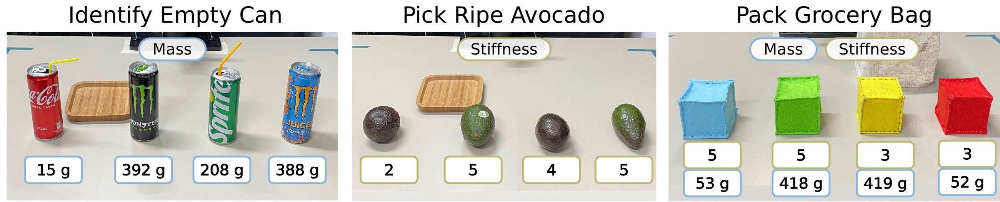
Ground-truth physical properties of the relevant target objects are annotated in each task setup, with mass (g) and/or stiffness level (1 to 5).
get_mass The goal is to identify the single empty soda can among four cans and place it on a wooden tray. The scene contains two sealed cans and two open cans with inserted straws.
A sealed can is unlikely to be empty, so an effective agent should treat the two opened cans as the promising candidates and use get_mass to confirm which one is empty, rather than weighing every can on the table.
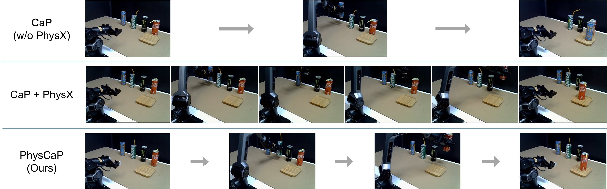
get_stiffness The goal is to identify the single ripe avocado among four and place it on a wooden tray. The scene contains two green avocados that are unripe and two dark avocados that both appear ripe, though only one is.
Since skin color cannot separate the two dark candidates, an effective agent should skip the green avocados and use get_stiffness to determine which of the two is actually ripe.
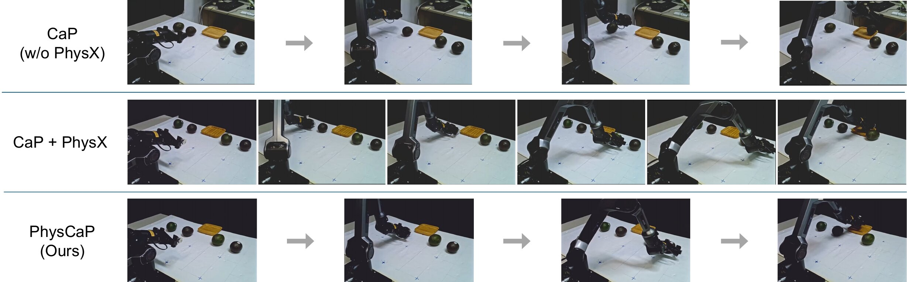
get_massget_stiffness The goal is to select a suitable item as the base of a grocery bag. The heavier and stiffer objects generally provide greater stacking stability.
Since the cubes look identical in shape, an agent cannot infer hidden mass and stiffness from vision alone; however, it would also not be ideal to test both properties for all cubes. An effective agent should eliminate two lighter candidates and only measure the stiffness of the heavier cubes after their mass has been measured.
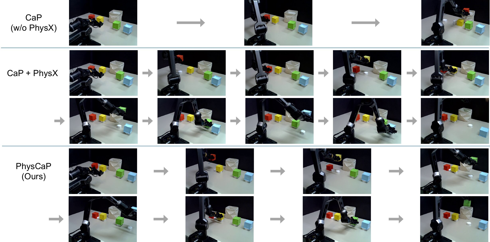
get_mass We replicate the Identify Empty Can task in LIBERO. The scene contains four cups (one empty and three full) and a target basket, with randomized cup poses and perturbed object mass.
Mass is not directly observable: ground-truth mass is revealed only after the agent grasps a cup for at least 0.5 seconds and lifts it 3 cm above its reference height for 0.5 seconds.
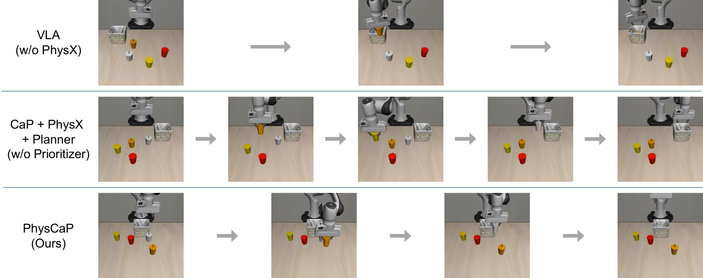
We evaluate over 10 trials per task with three metrics: task success rate (SR \(\uparrow\)), Objects Interacted (OI \(\downarrow\), physical exploration actions before task completion, including repeated interactions with the same object), and Execution Time (Time \(\downarrow\), total robot execution time). OI and Time are reported only for successful episodes. All agents use Gemini 3.1 Pro.
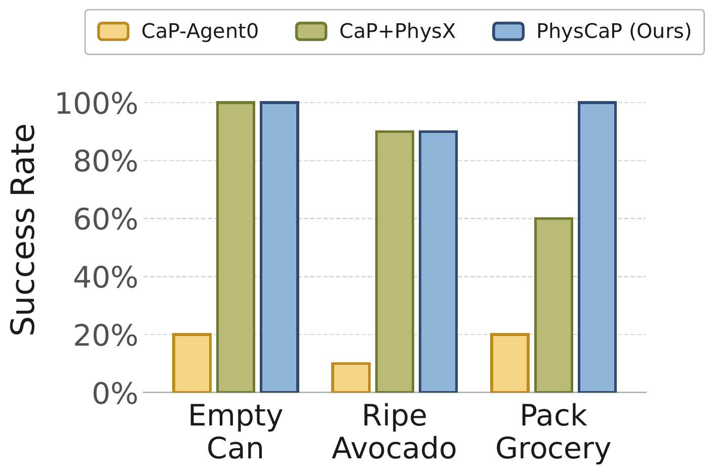
Success rates. The vision-only CaP baseline performs poorly on all three tasks. PhysCaP matches CaP+PhysX on Empty Can and Ripe Avocado, and improves on the longer-horizon Pack Grocery, where CaP+PhysX can lose track of prior measurements.
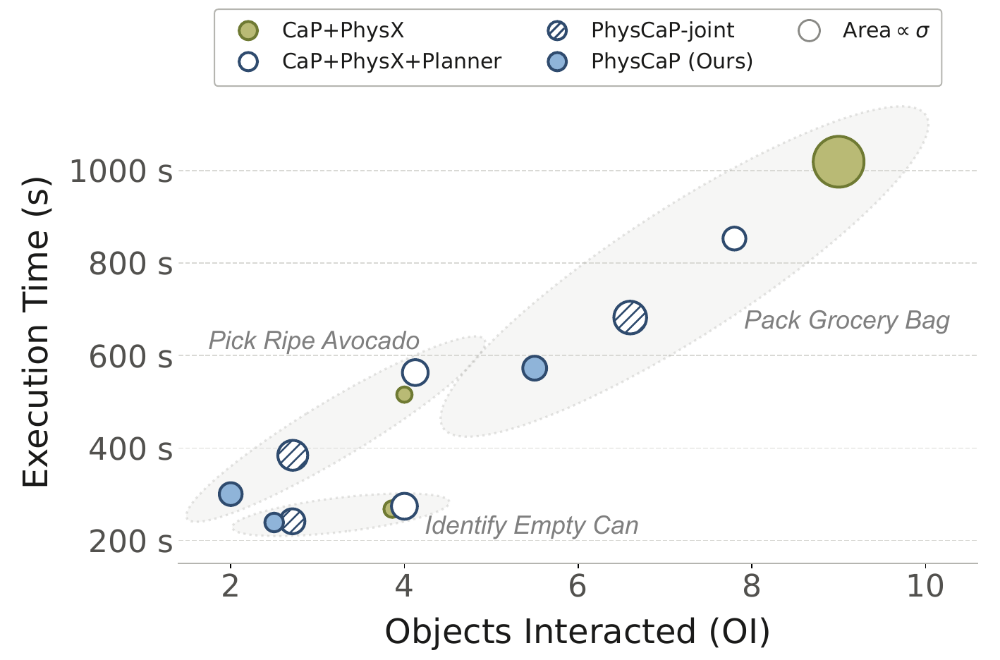
Exploratory efficiency. Number of physical interactions vs. total robot execution time. Lower-left is more efficient; bubble area shows the standard deviation.
| Method | Identify Empty Can | Pick Ripe Avocado | Pack Grocery Bag | |||
|---|---|---|---|---|---|---|
| OI ↓ | Time ↓ | OI ↓ | Time ↓ | OI ↓ | Time ↓ | |
| CaP+PhysX | 4.00 | 396.84 ± 15 s | 4.00 | 515.61 ± 9 s | 9.17 | 1019.32 ± 376 s |
| CaP+PhysX+Planner | 3.75 | 368.40 ± 62 s | 4.13 | 563.29 ± 76 s | 7.80 | 853.14 ± 54 s |
| PhysCaP-joint | 2.00 | 222.11 ± 2 s | 2.71 | 384.39 ± 111 s | 6.50 | 682.30 ± 139 s |
| PhysCaP (Ours) | 2.00 | 256.57 ± 62 s | 2.00 | 300.47 ± 53 s | 5.50 | 572.79 ± 61 s |
PhysCaP achieves the lowest or tied interaction count on all tasks and the shortest execution time on two of three.
Why separate the Planner and the Prioritizer? PhysCaP-joint puts prioritization into the Planner prompt, so one VLM call decides both when to stop and what to interact with next. It acts on visual cues such as a straw in a can in some trials, but otherwise falls back to near-exhaustive exploration. A separate Prioritizer applies those cues more consistently.
Vision-language-action policies map observations to actions without an explicit exploration step. Since it is non-trivial to adapt VLA DROID checkpoints to our PiPER setup, we compare in simulation using the LIBERO environment and the VLAs' publicly released LIBERO checkpoints (50 trials; execution time = simulation steps / 20 Hz).
| Method | SR ↑ | OI ↓ | Time ↓ |
|---|---|---|---|
| CaP+PhysX | 74% | 2.16 | 70.81 ± 32.50 s |
| CaP+PhysX+Planner | 62% | 1.45 | 79.55 ± 44.49 s |
| PhysCaP (Ours) | 78% | 1.44 | 71.24 ± 18.63 s |
| Vision-language-action policies | |||
| OpenVLA | 0% | — | — |
| π0.5 | 4% | 1.50 | — |
| MolmoAct2 | 23% | 1.04 | — |
OI and Time are reported only for successful episodes, so they are undefined for OpenVLA. π0.5 and MolmoAct2 typically select a can at random, which gives low SR and correspondingly low OI.
VLA rollouts in LIBERO. These policies map vision directly to actions without an exploration step; most fail because the empty cup cannot be identified visually.
We give a VLM progressively more information: the reference image (I), the robot arm's raw joint torques
(T, the same readings our get_mass module receives), and the object name (O).
On five reference objects from 13 g to 963 g, the best VLM setting has a mean absolute error of
134.5 ± 148.4 g, statistically indistinguishable from the image alone (151.5 ± 182.5 g).
get_mass reaches 38.1 ± 26.0 g.
get_mass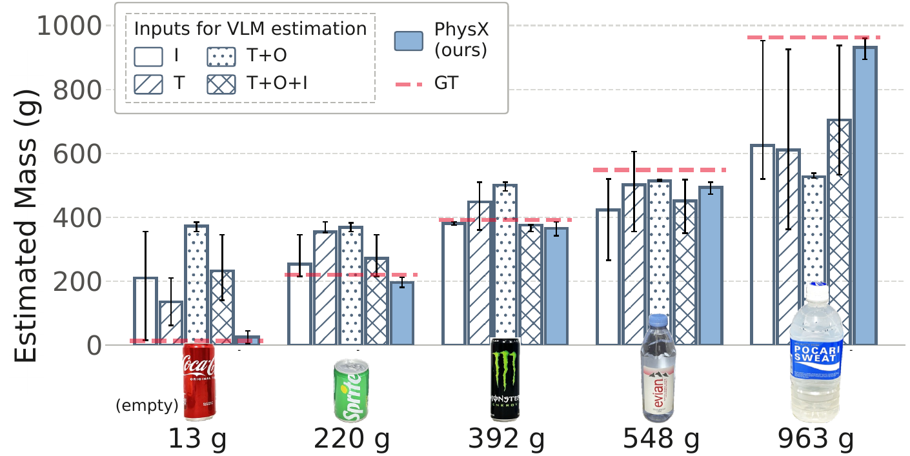
Mass estimation across five objects. PhysX closely matches ground truth, outperforming VLM estimates, which can be misled by visual appearance, e.g., substantially overestimating the mass of the empty can.
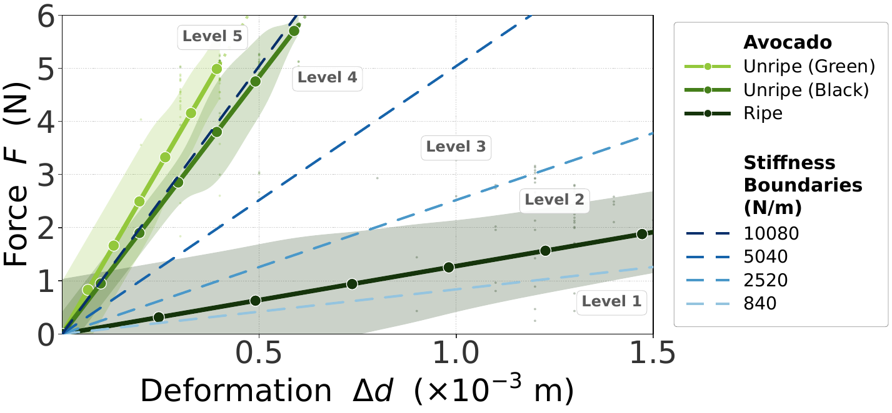
Stiffness measurement. Dashed lines mark the stiffness level boundaries, set with a 3D-printed button fitted with springs of known stiffness. The ripe avocado measures at level 2 and the unripe ones at levels 4–5, with no overlap, so a single squeeze is enough to tell them apart.
The limitation is not simply a lack of available information: VLMs struggle to convert physical measurements into accurate quantitative estimates. This motivates PhysX modules that extract physical properties explicitly from robot sensor measurements.
PhysCaP is an agentic system, so its backbone can be swapped for any sufficiently capable model. We repeat Identify Empty Can with Gemini 3.1 Pro replaced by Claude Fable 5 and by GPT-6 Astra, driving the Planner, Prioritizer and coding agent. All six configurations reach a 100% success rate, so we compare efficiency. PhysCaP requires fewer interactions and less execution time than CaP+PhysX under every backbone. PhysCaP with Gemini 3.1 Pro (OI 2.0) uses fewer interactions than CaP+PhysX with either GPT-6 Astra (OI 4.1) or Claude Fable 5 (OI 3.3), so on this task the gain comes from the architecture rather than the backbone.
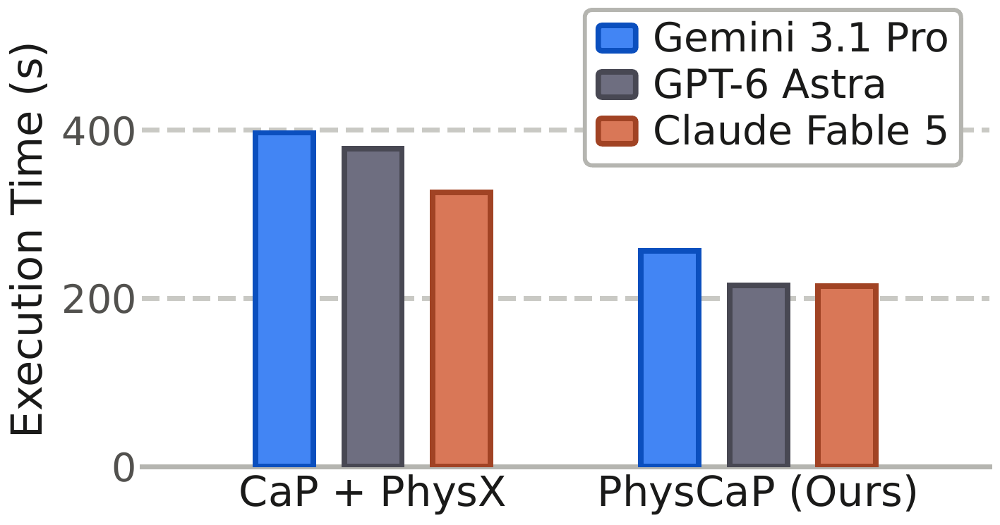
Execution Time (\(\downarrow\))
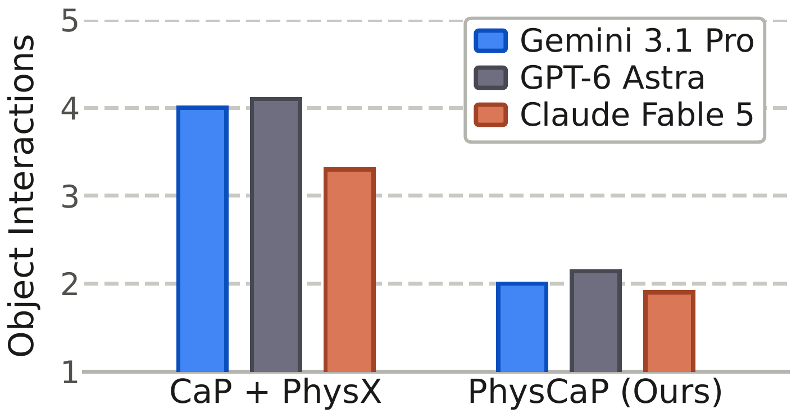
Object Interactions (\(\downarrow\))
@article{lin2026physcap,
title = {PhysCaP: Grounding Code-as-Policy Agent with Physics-Informed Exploration},
author = {Lin, Chen-Yu and Chen, Jing-Wen and Chang, Hsueh-En and Chen, Hung-An and
Chang, Sheng-Hsun and Huang, Chi-Pin and Yang, Fu-En and Chen, Min-Hung and
Chen, Yi-Ting and Wang, Yu-Chiang Frank and Sun, Shao-Hua},
journal = {arXiv preprint arXiv:2608.21031},
year = {2026}
}